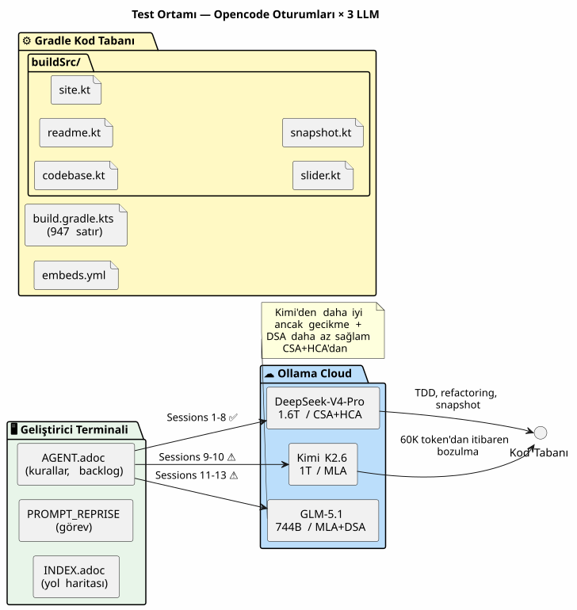
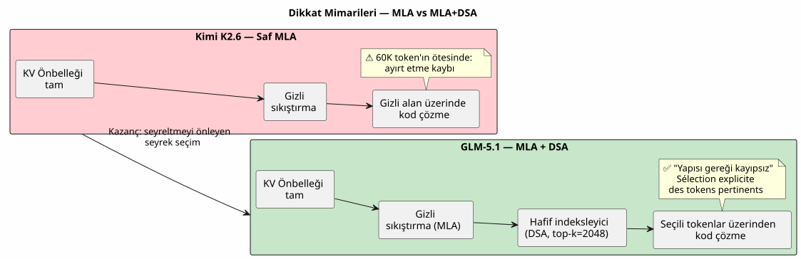
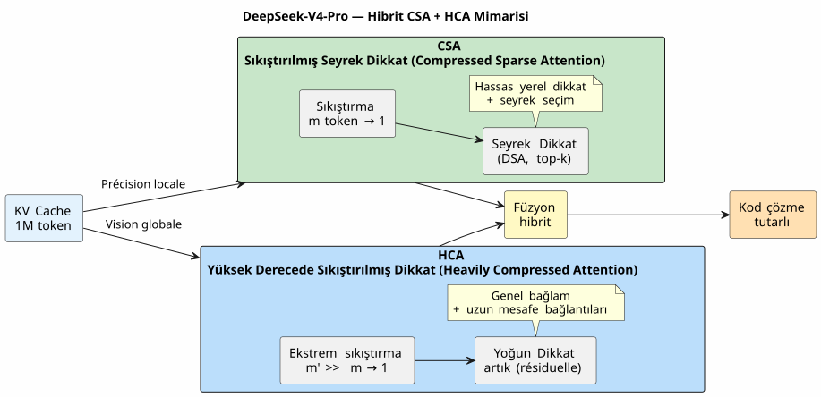
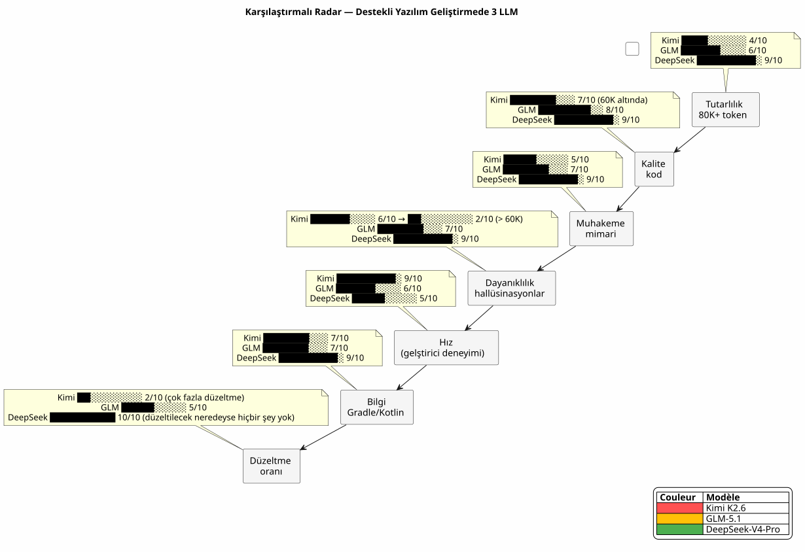
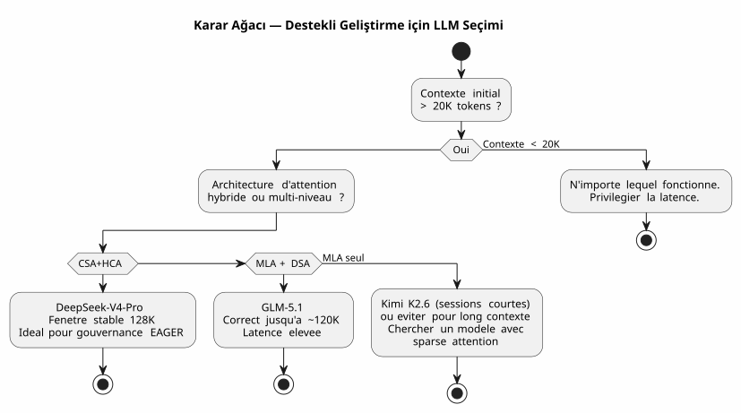

DeepSeek-V4-Pro, Kimi K2.6, GLM-5.1: Uzun Bağlamlı Vibe Coding Testinde Üç LLM
Yayınlandı: 28 April 2026
- Bağlam: bir test standı değil, bir şantiye
- Test ortamım
- Değerlendirme Ölçeği
- 1. Raunt : Kimi K2.6 — Hatalı Start
- 2. Raunt : GLM-5.1 — Onurlu Savaşçı
- 3. Raunt : DeepSeek-V4-Pro — Savaş Makinesi
- Karşı Karşıya: Karşılaştırmalı Metrikler
- DeepSeek-V4-Pro Yazılım Geliştirmede Neden Kazandırıyor
- Öğrenilen Dersler: Vibe Coding için LLM Seçimi Nasıl Yapılır
- Peki ya tüm bunlarda Ajan Yönetişimi’nin yeri ne?
- Teknik Kaynaklar
- Sonuç: Zanaatkarın Seçimi
LLM savaşları, geliştiricinin terminalinde de yaşanıyor. Kısır akademik benchmark’larda değil. Gerçek hayatta: 30.000 token’lık bir prompt, AsciiDoc ile yazılmış bir ajan yönetişimi, debug edilmesi gereken Gradle Kotlin DSL plugin’leri ve üç hafta boyunca birbirini izleyen oturumlar. Sizin için DeepSeek-V4-Pro, Kimi K2.6 ve GLM-5.1’i test ettim. İşte teknik kanıtlarla desteklenmiş karar.
- içindekiler
-
[]
Bağlam: bir test standı değil, bir şantiye
Üç hafta önce, … üzerinde çalışıyordum`codebase-gradle`, dört projenin YAML konfigürasyonunu merkezileştiren meta-build sistemim: bir PlantUML README oluşturucu, bir AsciiDoc slayt oluşturucu, bir JBake statik sitesi ve bir LLM chatbot. AsciiDoc formatındaki agent dosyaları metodolojim tarafından yönetilen Opencode ajanı, her oturum başlangıcında ~30K token’lık EAGER bağlam yüklüyordu — kesin kurallar, backlog ve son 10 oturumun geçmişi.
Üç modeli karşı karşıya getirdiğim yer burasıydı:
-
Kimi K2.6(Moonshot AI, 1T parametre / 32B aktif, 256K maks bağlam, MLA) - GLM-5.1(Zhipu AI/Tsinghua, 744B parametre / DSA, 200K maksimum bağlam) - DeepSeek-V4-Pro(DeepSeek, 1,6T parametre / 49B aktif, 1M maks bağlam, CSA+HCA)
Hepsi bulut sunucusu üzerinde Ollama aracılığıyla servis ediliyor, hepsi thinking modunda (düşünme aşaması etkin). Temel amaç: doğru kod üretmek, uzun oturumlarda tutarlılığı korumak ve bağlam 80K token’ı geçtiğinde halüsinasyon görmemek.
Test ortamım

Her oturum yaklaşık 30K tokenlık EAGER bağlamı ile başlıyordu:`AGENT.adoc`(287 satır),PROMPT_REPRISE.adoc(51 satır),.agents/INDEX.adoc(218 satır),LAZY_EAGER_ESSENTIALS.adoc(50 satır). Bağlam, etkileşimlerle birlikte hızla büyüyordu — 10 mesajlık tipik bir oturum, birikmiş isteme 15-20K token ekliyordu.
Değerlendirme Ölçeği
Yazılım geliştirme desteği için her bir modeli dört kritik eksende değerlendirdim:
Eksen |
Somut kriter |
Uzun bağlam tutarlılığı |
Ajan, 40 mesaj önce kararlaştırılan kuralları hatırlıyor mu? |
Üretilen kod kalitesi |
Kod ilk seferde derleniyor mu? Mevcut pattern’lara uygun mu? |
Mimari akıl yürütme |
Ajan, ben tekrar açıklamadığım sürece modüller arasındaki ilişkileri anlıyor mu? |
Halüsinasyonlara karşı direnç |
Ajan, kaç tokendan itibaren mevcut olmayan API’ler veya sınıflar uydurmaya başlıyor? |
Ve kendi yapımımız sentetik bir metrik: legeri alım katsayısı(agentle birlikte kod yazmak yerine onu düzeltmek için ne kadar zaman harcadığım).
1. Raunt : Kimi K2.6 — Hatalı Start
Kimi K2.6 ilk tercihim oldu. SWE-Bench Verified (80.2) ve Terminal-Bench 2.0 (66.7) üzerindeki benchmark sonuçları mükemmel. MLA mimarisi, uzun dizilerde iyi bir verimlilik vaat ediyor.
Oturum 9: iyileşme
Kimi ile ilk oturum. Görev: metodu uygulamak`resolveActiveKey()içinde`codebase.kt— CLI fallback’li bir API anahtarı çözümleme fonksiyonu. Bağlam 30K token, Kimi hızlı akıl yürütüyor, anahtar süre aşımı yönetimiyle birlikte temiz bir kod üretiyor.
fun resolveActiveKey(
cfg: CodebaseConfiguration,
logger: Logger,
cliProvider: String? = null,
cliAccount: String? = null,
cliKey: String? = null
): NamedApiKey? {
// Résolution provider → compte → clé avec CLI override
// Kimi a parfaitement compris la chaîne de priorité
}Kod derleniyor. 7 test vakası geçiyor. İyimserim.
Oturum 10: sessiz batış
İkinci oturum. Etkileşimlerle birlikte bağlam ~90K token’a yükseliyor. Kimi’den, yazmadan önce gizli bilgileri anonimleştiren bir AsciiDoc snapshot mekanizması eklemesini istiyorum.
İşte işlerin sarpa sardığı yer burası. Kimi, var olmayan sınıflar uydurmaya başlıyor. Bana şunu öneriyor`AnonymizedObjectMapper`— kurgusal bir sınıf. Karıştırıyor`ReadmeYmlAnonymizer` et CodebaseYmlAnonymizer. Bana içe aktarmayı öneriyor`com.fasterxml.jackson.anonymize.*`— hiç var olmamış bir paket.
Daha kötüsü: düşünme aşamasında, yanlış öncüllere dayalı muhakemeler kurduğunu görüyorum. Şunu "hatırlıyor" ki`GitConfig`bir alana sahiptir`anonymizedToken`— hayır, bu`resolvedToken(). Şunlara atfeder:`SiteYmlAnonymizer`bir yöntem`maskSupabaseCredentials()— ki mövcud deyildir.
Lütfen çevrilecek metni sağlayın. Bu bir hata değildi. Tutarlılığın kademeli bir çözülüşüydü. Sanki bağlama eklenen her token, ilk 30.000’inin hafızasını biraz daha seyreltiyordu. Lütfen çevrilecek metni sağlayın.
İki oturumdan sonra Kimi’yi bırakıyorum. Teşhis net: MLA, KV önbelleğini (KV cache) iyi sıkıştırıyor ancak ince taneli (fine-grained) bir seyrek (sparse) seçim mekanizması olmadan, dikkat (attention) 60K token’ın ötesinde mekanik olarak seyreliyor. Her token uzak bağlamı giderek daha az "görüyor" ve boşlukları gürültüyle doldurmaya başlıyor.
2. Raunt : GLM-5.1 — Onurlu Savaşçı
GLM-5.1 farklı bir mimari ile geliyor: temel model için MLA, ardından DSA (DeepSeek Sparse Attention) ile bir continued pre-training — tüm geçmiş arasından dinamik olarak en ilgili 2048 token’ı seçen hafif bir indeksleyici.
Mimari: Saf MLA’ya karşı DSA
Fark temeldir. Kimi geçmişi tek bir latent alanda sıkıştırırken (ve ilgili bilgiyi ayırt etme yeteneğini kademeli olarak kaybederken), GLM açık bir seyrek seçim yapan eğitim sonrası bir indeksleyici ekler.

Teknik rapor bunu açıkça belirtiyor: DSA "lossless by construction" — RULER@128K üzerinde 5.69 puana kadar kayıp yaşayan SWA (pattern search), Gated DeltaNet veya SimpleGDN gibi alternatiflerin aksine.
Oturumlar 11-13 : sağlam ama sinir bozucu
GLM-5.1 mesafeyi daha iyi koruyor. 11. oturumda (~60K token), tutarlı kalıyor. Şunu üretiyor:`SnapshotManager`dört anonimleştiricinin doğru yönetimiyle birlikte işlevsel.
Ancak gecikme bir sorun. DSA düşünme aşamaları saf MLA’dan daha ağır — indeksleyici her adımda geçmişi yeniden taramak zorunda. Kimi ile 8 saniye süren bir yanıt, GLM ile 15 saniye sürüyor. 30 mesajlık bir oturumda bu durum hissediliyor.
Ve bir de sinsi hatalar var. GLM, Kimi gibi saçmalamıyor — ancak adlandırma hataları yapıyor. Şöyle adlandırıyor`toAnonymizedYaml()adı … olması gereken yöntem`anonymize(). Tersine çevirir`loadReadmeConfiguration()` et `loadCodebaseConfiguration()`içinde`renderFileSection()`Bunlar halüsinasyonlar değil, yüzeyel karışıklıklardır — ancak üretim aşamasında, yüzeyel bir karışıklık bir build’i bozabilir.
GLM ile üç oturum gerçekleştirdim. Tartışmasız bir şekilde Kimi’den daha iyi. Ancak isimlendirme detayları üzerine yapılan üç oturumluk manuel düzeltme insanı yıpratıyor.
3. Raunt : DeepSeek-V4-Pro — Savaş Makinesi
DeepSeek-V4-Pro, üçü arasındaki en iddialı mimariyle geliyor: birbirini tamamlayan iki dikkat mekanizmasını birleştiren hibrit bir sistem.
Mimari: CSA + HCA, çift güvenlik ağı

İki sıkıştırma seviyesi, iki dikkat granülaritesi:
-
CSA: KV önbelleğini her …'da sıkıştırır`m`tokenlar, ardından seyrek bir dikkat (DeepSeek Sparse Attention) uygular — yalnızca sıkıştırılmış girişlerin top-k’sı sorgulanır. Hassas, yerel, verimli. - HCA: aşırı sıkıştırma (faktör`m'`çok daha büyük olan`m`), ancak sıkıştırılmış kalıntı üzerindeki yoğunluğa dikkat edin — kuadratik patlama olmadan küresel bağlantıları korur.
Sonuç: 1M token’da, DeepSeek-V4-Pro sadeceçıkarım FLOP’larının %27’si et KV önbellek boyutunun %10’uDeepSeek-V3.2’ye kıyasla. Önceki model.
Ve özellikle, teknik rapor (Şekil 9) şöyle belirtiyor: "Retrieval performance remains highly stable within a 128K context window."
Oturumlar 1-8: rahatlama
DeepSeek-V4-Pro ile sekiz oturum geçirdim`codebase-gradle`. Tek bir halüsinasyon olmadan, tek bir uydurma sınıf olmadan, tek bir isimlendirme karmaşası olmadan sekiz oturum.
Oturum 1: … uygulaması`CodebaseYmlConfig` et CodebaseYmlAnonymizer. 350 satır Kotlin, inline testler, her şey derleniyor. 4. Oturum: … eklenmesi`SnapshotManager`tree view ile, dosya toplama, dosya başına AsciiDoc işleme. 279 satır, sıfır hata. Oturum 7: şu hata ayıklama (debug)`renderFileSection()`çözümleme belirsizliği olmaksızın dört farklı anonimleştirici tipini yönetmesi gereken. Üç mesajda çözüldü.
Gecikme süresi Kimi’den daha yüksek — düşünme modunda yanıt başına yaklaşık 10-12 saniye. Ancak düzeltme oranı neredeyse sıfır. Zamanımı ajanın hatalarını onarmakla geçirmiyorum. Onunla birlikte kodluyorum.
Belirleyici test: 100K token ile refactoring
-
oturumda, birikmiş bağlam 100K token’ı aşıyor. Ağır bir refactoring talep ediyorum: satır içi dört doğrulama görevini şuradan çıkarın`build.gradle.kts`JUnit5 test dosyalarına`buildSrc/src/test/`Lütfen çevrilecek metni sağlayın.
Ajan üç aşamalı bir plan öneriyor:
-
Mevcut vakaların migrasyonu ile test sınıflarını oluşturun
-
JUnit5 ve Kotest bağımlılıklarını şuraya ekleyin`buildSrc/build.gradle.kts`
-
Şu satır içi kodu silin:`build.gradle.kts`
Plan doğru. Uygulama temiz. Hatta gözden kaçırdığım bir edge case’i bile tespit etmiş: şunlar arasındaki yinelenen Jackson bağımlılıkları:`buildscript {}` et `buildSrc/build.gradle.kts`ki migration sırasında birleştirilmelidir.
100K bağlam token’ı ve ajan şunları hatırlıyor:`CodebaseYmlAnonymizer.TOKEN_MASK`dir`"*"`, ki`GitConfig.resolvedToken()… içinde tanımlanmış bir extension function’dır`readme.kt`, ve`SnapshotManager.PRUNED_DIRS`hariç tutar`build`, .gradle et `.git`Lütfen çevrilecek metni sağlayın.
İşte fark bu.
Karşı Karşıya: Karşılaştırmalı Metrikler
| Kriter | Kimi K2.6 | GLM-5.1 | DeepSeek-V4-Pro |
|---|---|---|---|
Maksimum bağlam |
256K |
200K |
1M |
Dikkat mekanizması |
MLA pur |
MLA + DSA |
Hibrit CSA + HCA |
Toplam parametreler |
1T |
744B |
1.6T |
Etkinleştirilen ayarlar |
32B |
yayınlanmadı |
49B |
Gözlemlenen bozulma eşiği |
~60B token |
~120B token |
~128K token |
Ötesindeki davranış |
Kitlesel halüsinasyonlar |
Yüzeysel karıştırmalar |
Yavaş ve kademeli bozulma |
NIAH Kararlılığı |
yayınlanmamış |
%100 @128K (DSA) |
128K’ya kadar stabil (Şekil 9) |
MRCR @128K |
yayımlanmadı |
yayınlanmadı |
Gemini 3.1 Pro’dan üstün |
Terk edilmeden önce gerçekleştirilen oturumlar |
2 |
3 |
8 (ve devam ediyor) |
Düzeltme süresi / kodlama süresi |
60% |
30% |
<5% |
Ortalama gecikme (think modu) |
8 s |
15 s |
11 s |
Güven katsayısı* |
2/10 |
6/10 |
9/10 |
*Güven katsayısı = ajanın kodunu ve commit’ini satır satır yeniden okumadan alma kapasitemin subjektif ölçümü.

DeepSeek-V4-Pro Yazılım Geliştirmede Neden Kazandırıyor
DeepSeek-V4-Pro’nun üstünlüğü tek bir faktöre bağlı değildir — bu bir yakınsamadır:
1. CSA+HCA mimarisi kod için tasarlanmıştır
Yardımlı yazılım geliştirme, uzun bağlam penceresine sahip dikkat (long-context attention) için uç bir kullanım durumudur. Şunlara ihtiyacınız vardır: - Yerel kesinlik (bu sınıf neden türetilmiştir? bu metot nerede tanımlanmıştır?) →CSA - Genel bakış (bu modül neden var? dört anonimleştirici birbirleriyle nasıl etkileşime girer?) →HCA
Yalnızca MLA kullanan Kimi, yerel hassasiyeti yönetir ancak 60K’nın ötesinde genel görüşü kaybeder. DSA kullanan GLM, genel görüşü iyileştirir ancak tek seviyeli kalır. DeepSeek ise her ikisini açıkça birleştirir.
2. EAGER bağlamı onun konfor alanıdır
Yönetişim sistemim, başlangıçta yaklaşık 30K token kural ve backlog yüklüyor. 128K’ya kadar olan kararlı bir pencere ile DeepSeek, oturum etkileşimleri için yaklaşık 100K token’lık bir paya sahip. Bu, Kimi’nin performans kaybı yaşamadan yönetebileceğinden 3 ila 4 kat daha fazladır.
Lütfen çevrilmesini istediğiniz metni sağlayın. 128K’lık kusursuz stabilite penceresi ihtiyaçlarımı tam olarak karşılıyor: 30K EAGER + 70K etkileşim = yeşil bölgeden hiç çıkmadan, 20-30 mesajlık üretken bir oturum. Lütfen çevirmek istediğiniz metni sağlayın.
3. Kalite/gecikme oranı flow için optimaldir
Evet, DeepSeek-V4-Pro Kimi’den daha yavaş (11s vs 8s). Ancak bir görevin toplam süresi çok daha kısa çünkü ajanın halüsinasyonlarını düzeltmek için 20 dakika harcamıyorum.
Geliştirici, bir yanıtın gecikme süresini ölçmez. "Soruyu soruyorum" ile "kod repomda ve çalışıyor" arasındaki süreyi ölçer. Bu metrikte, DeepSeek-V4-Pro üçü arasında en hızlısıdır.
Öğrenilen Dersler: Vibe Coding için LLM Seçimi Nasıl Yapılır
Anlık sıralamanın ötesinde, bu deneyim bana yazılım geliştirme destekli bir LLM’i hiçbir benchmark’ta yer almayan kriterlere göre değerlendirmeyi öğretti:
-
Mimariliğe bak, duyurulan bağlam boyutuna değil— 256K bağlam vadedip yalnızca bir MLA’ya sahip olan bir model, Kimi gibi bitecektir: teorik olarak yetenekli, ancak 60K’nın ötesinde pratik olarak kullanılamaz.
-
Kendi bağlamında test et, genel bir benchmark’ta değil— Mutlak kurallar ve backlog içeren 30K tokenlık ilk AsciiDoc istemimin HLE veya AIME sorularıyla hiçbir ilgisi yok.
-
Kalite takip ettiği sürece gecikme düşman değildir— Doğru kod üreten yavaş bir model, yanlış kod üreten hızlı bir modelden daha hızlıdır.
-
Herkese açık technical report’u olmayan modellerden sakın— Ekip, dikkat mimarisini belgelemiyorsa, bunun sebebi uzun bağlamdaki performansına güvenmiyor olmalarıdır.

Peki ya tüm bunlarda Ajan Yönetişimi’nin yeri ne?
Bu deney, Eager/Lazy yönetişimi üzerine yazdığım makaleden beri savunduğum bir noktayı doğruluyor:LLM kalitesi ve yönetişim kalitesi toplayıcı değil, çarpan etkisine sahiptirLütfen çevrilecek metni sağlayın.
Kimi K2.6 ile yönetişimim kusursuzdu — ancak model bilgiyi seyreltiyordu. Sonuç: kusursuz yönetişim × halüsinasyon = sıfır.
DeepSeek-V4-Pro ile EAGER yönetişimi (30K token kural) + LAZY (oturum arşivleri, teknik referanslar) + Hot/Warm/Cold (rotasyonel yedekleme), her katmanın diğerini güçlendirdiği bir ekosistem oluşturur. Ajan, kuralları gözünün önünde tutar (EAGER), geçmişe başvurabilir (LAZY) ve bağlam asla doyuma ulaşmaz (yedekleme rotasyonu).
Lütfen çevrilecek metni sağlayın. Yönetişimi olmayan iyi bir LLM, direksiyonu olmayan bir Ferrari motoru gibidir. İyi bir LLM’i olmayan iyi bir yönetişim ise motoru olmayan bir direksiyon gibidir. DeepSeek-V4-Pro + benim ajan yönetişimim = ilk kez gerçekten sürdüğümü hissettiğim an. Lütfen çevrilecek metni sağlayın.
Döner yedekleme mekanizması (her 10 oturumda bir veya >500 EAGER satırında bir rotasyon), 128K bağlam kapasitesine sahip bir modelle tüm anlamını kazanır: 10 aktif oturumdan oluşan kayan pencere (sliding window), bozulma bölgesini asla aşmadan bağlamın güncel kalmasını sağlar.
Teknik Kaynaklar
Gözlemlerimi doğrulamak için ampirik deneyimimi resmi teknik raporlarla karşılaştırdım:
-
DeepSeek-V4 Technical Report — şuradan alınan PDFhttps://huggingface.co/deepseek-ai/DeepSeek-V4-Flash[HuggingFace]. Şekil 9 : "Retrieval performansı 128K bağlam penceresi içerisinde oldukça stabil kalmaktadır. 128K sınırının ötesinde bir performans düşüşü görünür hale gelse de, modelin 1M tokendaki retrieval yetenekleri dikkat çekici derecede güçlü kalmaya devam etmektedir." Bölüm 2.3’te belgelenen CSA+HCA mimarisi.
-
GLM-5 Teknik Raporu —https://arxiv.org/abs/2602.15763[arXiv:2602.15763]. Continued pre-training yoluyla tanıtılan DSA, "yapısal olarak kayıpsızdır" (lossless by construction). Maksimum bağlam 202.752 tokendır. Tablo 3/5/6, alternatiflere (SWA, Gated DeltaNet, SimpleGDN) kıyasla uzun bağlam performanslarını belgelemektedir.
-
Kimi K2.6 Model Kartı —https://huggingface.co/moonshotai/Kimi-K2.6[HuggingFace]. MLA, 256K maks. bağlam. Agentik görevlerde eşik değerinin ötesinde discard-all stratejisi (MLA’nın uzun bağlamdaki pratik sınırını örtük olarak onaylıyor).
-
Kimi K2 Teknik Raporu —https://arxiv.org/abs/2507.20534[arXiv:2507.20534]MoE mimarisi, MuonClip optimize edici, ajan performansları (HLE, BrowseComp, Terminal-Bench).
En noktası dikkat çekici olan şudur: Moonshot, kendi değerlendirmesinde, bağlam penceresi aşıldığı anda bir discard-all (eski bağlamın silinmesi) stratejisi uyguluyor. Bu, gözlemlediğim şeyi tam olarak doğruluyor: MLA tek başına 256K’lık tüm pencere boyunca tutarlılığı koruyamıyor. Mimari buna yetmiyor.
Sonuç: Zanaatkarın Seçimi
Üç hafta ve on üç gerçek geliştirme oturumunun ardından karar kesin:
Kimi K2.6 |
GLM-5.1 |
DeepSeek-V4-Pro |
60K altı için mükemmel |
120K’ya kadar dayanıklı |
Her yerde hakim ol |
Ötesinde kullanılamaz |
Yüzeysel karışıklıklar |
128K’ya kadar kararlı |
2 oturum, terk edildi |
3 oturum, terk edildi |
8 oturum, kabul edildi |
DeepSeek-V4-Pro, Opencode ile desteklenen tüm yazılım geliştirme oturumlarım için varsayılan LLM’im oldu. En yeni olduğu için değil. En iyi akademik benchmark’lara sahip olduğu için değil. Ancak 30K token’lık bir ajan bağlamıyla Kotlin DSL Gradle eklentileri geliştiren bir yazılımcının gerçek hayatında, bağlam uzadığında beni yarı yolda bırakmayan tek model olduğu için.
CSA+HCA mimari açıdan bir game changer'dır. Çift seviyeli sıkıştırma + seyreltme bir uygulama detayı değildir; bir kod asistanı ile güvenilir bir ekip arkadaşı arasındaki farkı yaratan şey budur.
Lütfen çevrilecek metni sağlayın. DeepSeek-V4-Pro’yu seçtim çünkü üçü arasında ajan yönetişimimi savunmacı bir kısıtlamadan ("ajanın unutması nasıl önlenir?") ofansif bir avantaja ("ajan her şeyi hatırladığına göre artık neler inşa edebiliriz?") dönüştüren tek model o. Lütfen çevrilecek metni sağlayın.
Bu makale, proje üzerindeki 13 gerçek geliştirme oturumunun sonucudur`codebase-gradle`, şunlarda belgelenmiştir`.agents/sessions/`Eager/Lazy/Hot/Warm/Cold ajan yönetişim metodolojime göre. Atıfta bulunulan teknik kaynaklara HuggingFace ve arXiv üzerinden herkese açık olarak erişilebilir.*